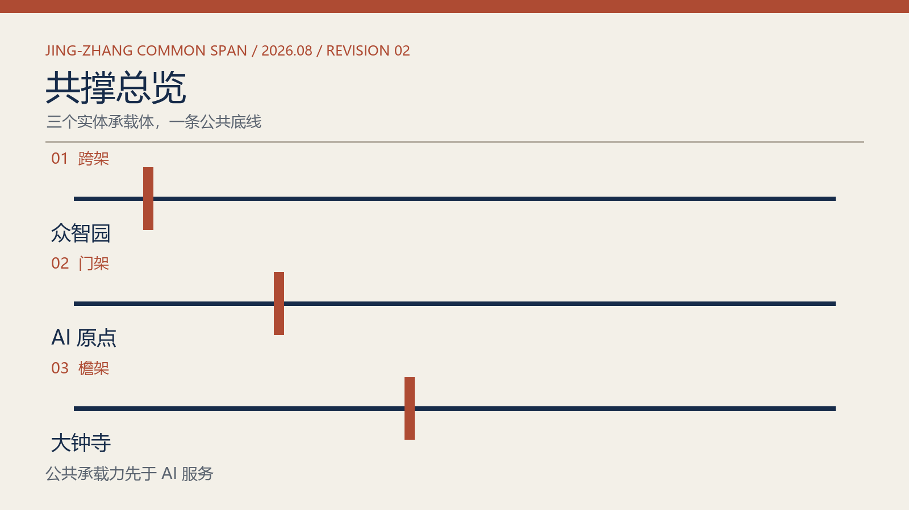
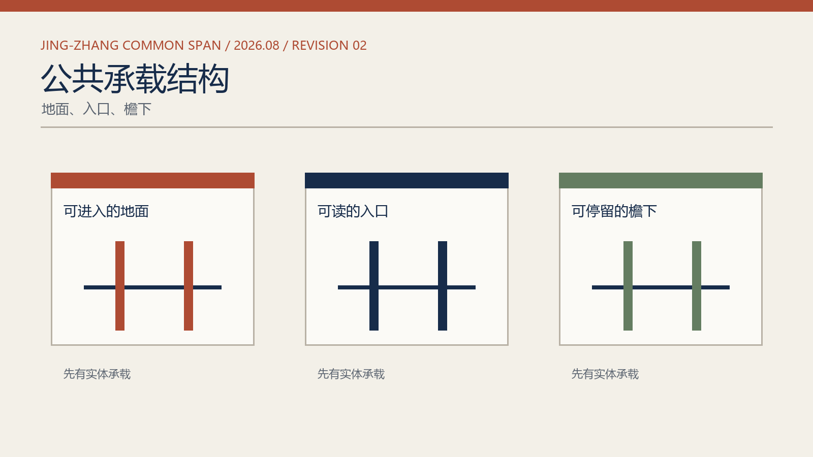
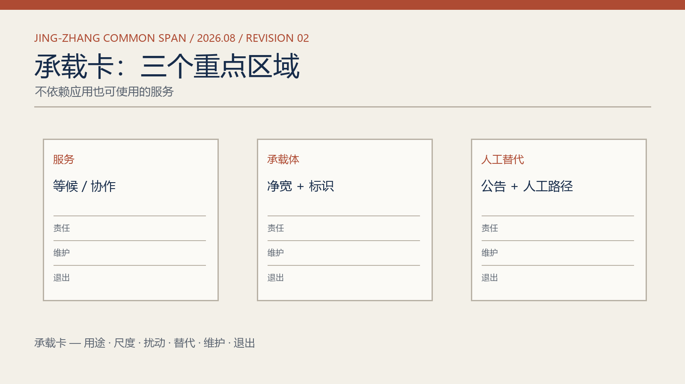
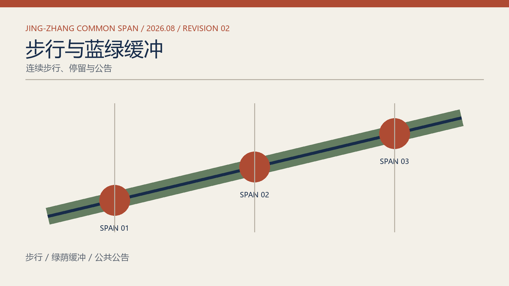
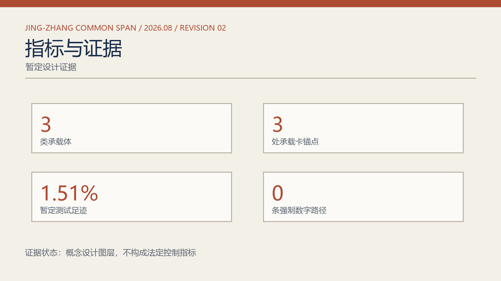

JING-ZHANG COMMON SPAN · 2026
京张·共撑
公共承载力先于 AI 服务。以跨架、门架、檐架三类城市承载体，让交通、问询、休憩与维护在数字系统暂停时仍可被看见、使用和修复。
三类承载体





任务覆盖与自检状态
总览地图 / 三层范围 / 用地分区 / 建筑 / 交通慢行 / 更新项目 / AI 场景：均在图册、承载卡与概念图层中交叉表达。来源、假设和自检状态见方案文本与数据包。